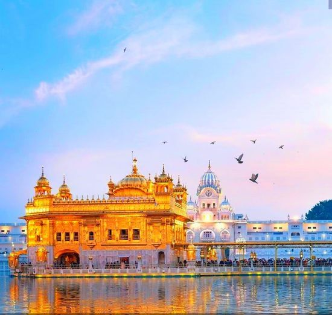
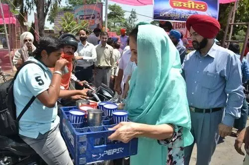
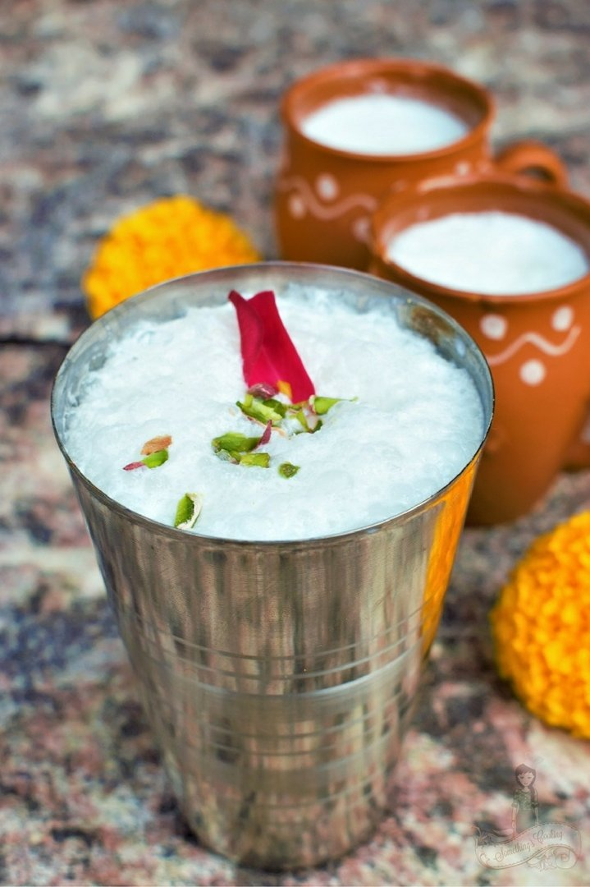
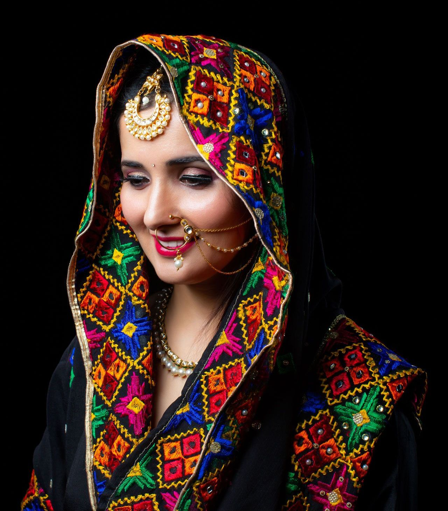
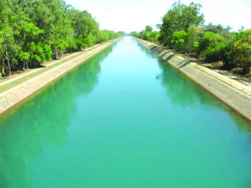

My Hometown is Punjab and it has beautiful imprint in my head and life. Let me show you what i visualize when I hear the word Punjab.
Golden Temple
There are seven major canal irrigation systems in Punjab and they are, Sirhind Canal, Bist Doab Canal, Ferozepur Feeder/Sirhind Feeder, Eastern Canal, Makhu Canal, Bhakra Main Line Canal, Upper Bari Doab Canal, Kasmir Canali. Shahnehar Canal and Kandi Canal.


The warmth in hearts of Punjabis
If you ever visit panjab during the summers, you'll see people holding stalls of Sharbat they call it seva. Quenching thurst of people during summer.
The patiyala glass of lassi
Lassis are an ancient drink originating from the Punjab region. A lassi is a blended drink with dahl (yogurt), water, spices and sometimes fruit.


The Phulkaris
Phulkari refers to the folk embroidery of the Punjab. Although Phulkari means floral work, the designs include not only flowers but also cover motifs and geometrical shapes.
The canals
There are seven major canal irrigation systems in Punjab and they are, Sirhind Canal, Bist Doab Canal, Ferozepur Feeder/Sirhind Feeder, Eastern Canal, Makhu Canal, Bhakra Main Line Canal, Upper Bari Doab Canal, Kasmir Canali. Shahnehar Canal and Kandi Canal.
